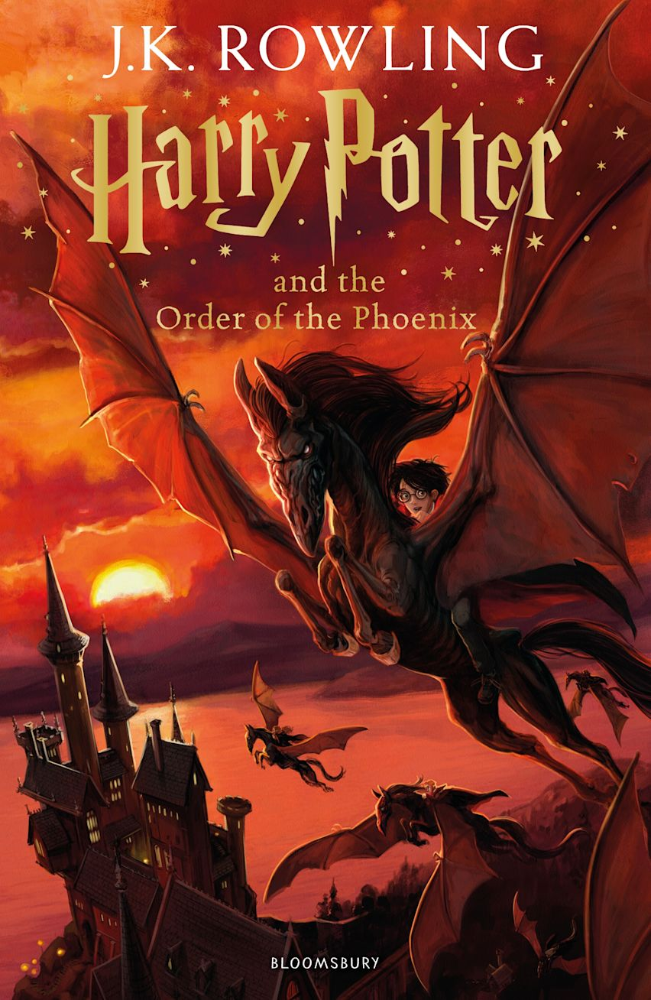
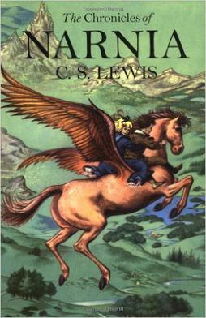
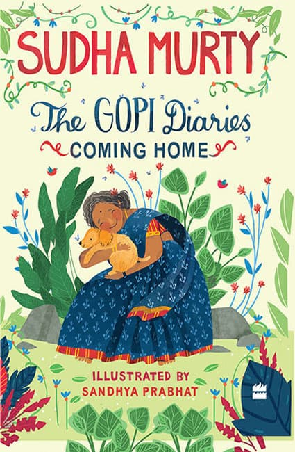
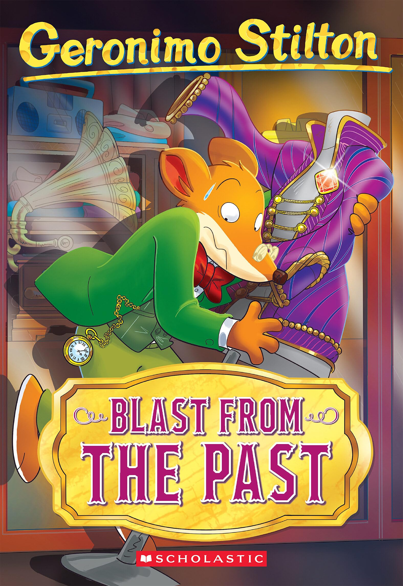

While staying at the Dursleys', Harry Potter and Dudley Dursley are attacked by Dementors. Harry repels them using a Patronus spell. The Ministry of Magic detects Harry using magic and expels him from Hogwarts, though he is later exonerated. The Order of the Phoenix, a secret organisation founded by Albus Dumbledore, informs Harry that the Ministry of Magic is attempting to stonewall rumors about Lord Voldemort's return. At the Order's headquarters, Harry's godfather, Sirius Black, mentions that Voldemort seeks an object he previously lacked; Harry believes it to be a weapon. Minister for Magic Cornelius Fudge has appointed Dolores Umbridge as Hogwarts new Defence Against the Dark Arts professor. Umbridge's refusal to teach defensive spells causes her and Harry to clash. Harry is forced to write lines for "lying" about Voldemort; a magic quill etches the words into his hand as he writes. Ron and Hermione are outraged, but Harry refuses to tell Dumbledore, who has distanced himself from Harry. As Umbridge gains more control over the school, Ron and Hermione help Harry form "Dumbledore's Army", a secret group to teach students defensive spells. Umbridge recruits Slytherins for an Inquisitorial Squad to spy on the other students.

the series is set in the fictional realm of Narnia, a fantasy world of magic, mythical beasts, and talking animals. It narrates the adventures of various children who play central roles in the unfolding history of the Narnian world. Except in The Horse and His Boy, the protagonists are all children from the real world who are magically transported to Narnia, where they are sometimes called upon by the lion Aslan (who appears in all seven books) to protect Narnia from evil. The books span the entire history of Narnia, from its creation in The Magician's Nephew to its eventual destruction in The Last Battle.

Sudha Murty began her professional career in computer science and engineering. She is a member of the public health care initiatives of the Gates Foundation. She has founded several orphanages, participated in rural development efforts, supported the movement to provide all Karnataka government schools with computer and library facilities, and established Murty Classical Library of India at Harvard University. Murty is best known for her philanthropy and her contribution to literature in Kannada and English. Dollar Bahu (lit. 'Dollar Daughter-in-Law'), a novel originally authored by her in Kannada and later translated into English as Dollar Bahu, was adapted as a televised dramatic series by Zee TV in 2001. Runa (lit. 'Debt'), a story by Sudha Murty was adapted as a Marathi film, Pitruroon by director Nitish Bhardwaj. Sudha Murty has also acted in the Kannada Film Prarthana

Geronimo Stilton is an Italian children's book series created by Elisabetta Dami[1] and written under the pen name of the title character. Scholastic Corporation began publishing the English version of the series in the US in February 2004. In the UK, the English books are published by Sweet Cherry Publishing. The series focuses on the title character, a mouse who lives in New Mouse City on Mouse Island. A best-selling author in-universe, Geronimo Stilton,[2] works as editor and publisher for the newspaper, The Rodent's Gazette. He has a younger sister named Thea Stilton,[3] a cousin named Trap Stilton,[3] and a nephew, nine-year-old Benjamin Stilton. Geronimo is a nervous, mild-mannered mouse who prefers a quiet life, yet keeps getting into faraway adventures with Thea, Trap, and Benjamin in both fictional and real locations. The books are written as fictional memoirs of him on these adventures. The books are designed and distributed in full color, depicting important words in the text as colored and in illustrative typefaces.[4] In December 2025, it was announced that the book series was acquired by Italian animation studio Rainbow.[5] The series, combined with many spin-off series, has sold over 180 million copies worldwide and has 309 books in total. The series has also been adapted into an animated television series of the same name, theatrical shows, video games, and graphic novels.